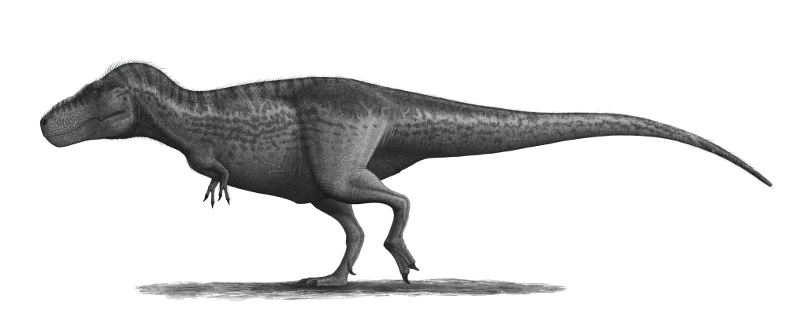

Tyrannosaurus Rex

Allgemeines
Tyrannosaurus (Latinisierung von altgriechisch τύραννος týrannos [„Herrscher, Despot“] sowie σαῦρος saúros [„Echse“]) ist eine Gattung bipeder, fleischfressender Dinosaurier aus der Gruppe der Theropoda.
Die einzige allgemein anerkannte Art ist Tyrannosaurus rex, häufig mit T. rex, umgangssprachlich auch T-rex, abgekürzt. Diese Art ist als bekanntester Dinosaurier ein fester Bestandteil der Populärkultur. Einige Paläontologen halten jedoch Tarbosaurus bataar aus Asien für eine zweite Art. Verschiedene andere Gattungen nordamerikanischer Tyrannosauriden wurden ebenfalls als Synonyme des Tyrannosaurus beschrieben. Eine 2022 veröffentlichte und in Fachkreisen kontrovers diskutierte Studie stellt aufgrund der hohen anatomischen Variabilität von Tyrannosaurus-Funden die zwei weiteren Arten Tyrannosaurus imperator und Tyrannosaurus regina auf.
Fossilien des Tyrannosaurus fanden sich in verschiedenen Gesteinsformationen im westlichen Nordamerika, die auf die letzten drei Millionen Jahre der Kreidezeit datiert werden, also vor etwa 68 bis 66 Millionen Jahren (spätes Maastrichtium). Tyrannosaurus gehörte damit zu den letzten Nichtvogel-Dinosauriern, die bis zum Kreide-Tertiär-Massenaussterben existierten.
Wie andere Tyrannosauriden auch war Tyrannosaurus ein bipeder (zweibeiniger) Fleischfresser mit einem massigen Schädel, welcher durch einen langen, schweren Schwanz ausbalanciert wurde. Im Verhältnis zu den langen und kräftigen Hinterbeinen waren die Arme von Tyrannosaurus rex klein, aber für ihre Größe ungewöhnlich kräftig. Sie zeigten lediglich zwei Finger, obwohl über einen möglichen rudimentären (zurückgebildeten) dritten Finger berichtet wurde. Mit einer Länge von bis zu 13 Metern, einer Hüfthöhe von vier Metern und einem Gewicht von 8,8 Tonnen war er der größte bekannte Tyrannosauride und einer der größten landlebenden Fleischfresser überhaupt, obwohl einige andere Theropoden ähnlich groß oder noch größer (allerdings zumeist graziler und leichter) waren. Als der bei weitem größte Fleischfresser seines Lebensraums stand Tyrannosaurus vielleicht als Spitzenprädator an der Spitze der Nahrungskette und jagte Hadrosaurier und Ceratopsier; allerdings vermuten einige Experten, dass es sich primär um einen Aasfresser handelte.
Bisher wurden mehr als 30 Exemplare von Tyrannosaurus identifiziert, darunter sind einige fast vollständige Skelette. Weiches Gewebe und Proteine wurden von mindestens einem dieser Funde beschrieben. Die vergleichsweise zahlreichen Funde erlaubten Studien über die Biologie dieses Tieres, einschließlich der Individualentwicklung und der Biomechanik. Zur Diskussion stehen des Weiteren die Fressgewohnheiten, die Physiologie und die mögliche Geschwindigkeit von Tyrannosaurus. Die Gesamtzahl aller jemals gelebt habenden Exemplare wird auf 2,5 Milliarden geschätzt.
Merkmale
Tyrannosaurus gehörte zu den größten landlebenden Fleischfressern aller Zeiten. Das größte und schwerste bekannte Exemplar ist der kanadische Fund „Scotty“ (Katalognummer RSM P2523.8), der Ausmaße von gut 13 Metern und ein Gewicht von 8,8 Tonnen erreichte. Damit übertrifft der Fund das bisher größte nahezu vollständige Exemplar „Sue“ (Katalognummer FMNH PR2081), welches in der Länge zwischen 12,3 und 12,4 Meter misst und eine Hüfthöhe von 4 Metern hat. Gewichtsschätzungen verschiedener Wissenschaftler variieren beträchtlich und reichen von weniger als 4,5 bis über 7,2 Tonnen, wobei die neuesten Schätzungen zwischen 5,4 und 6,8 Tonnen liegen. Eine neue Methode hat jedoch das Volumen einiger Individuen gemessen und führte zu einem Minimum von 8,4 t für „Sue“. Greg Paul schätzt „Sue“ auf 6,1 t.
Tyrannosaurus rex war größer als der gut bekannte Allosaurus aus dem Oberjura und etwas kleiner als Spinosaurus aus der frühen Oberkreide. Sein Gewicht übertrifft das aller anderen terrestrischen Theropoden – nur Spinosaurus könnte ein ähnliches Gewicht erreicht haben.
Der „S“-förmig gebogene Hals von Tyrannosaurus war kurz und muskulös, um den schweren Kopf zu unterstützen. Die Beine gehörten zu den im Verhältnis zum Körper längsten aller Theropoden und stehen im Kontrast zu den winzigen, aber kräftigen Armen. Lange wurde angenommen, dass die Arme lediglich zwei Finger besaßen – in einem noch nicht veröffentlichten Bericht wird allerdings ein dritter, rudimentärer Finger beschrieben. Der Schwanz war schwer und lang, um den massiven Rumpf und Kopf auszubalancieren, und zeigte manchmal über vierzig Wirbel. Um die enorme Masse des Tieres zu kompensieren, waren viele Knochen hohl.
Die größten bekannten Tyrannosaurus-Schädel waren bis zu 1,5 Meter lang. Im Gegensatz zu den Schädeln anderer nicht-tyrannosauroider Theropoden war der hintere Teil des Schädels extrem breit, während die Schnauze schmal war. Durch diese Anpassung waren die Augen mehr nach vorne gerichtet, was ein ungewöhnlich gutes räumliches Sehen ermöglichte. Die Schädelknochen waren massiv und einige Knochen, wie das paarige Nasenbein, waren miteinander verschmolzen, was den Schädel stabilisierte. Viele Knochen waren jedoch pneumatisch, zeigten also Aushöhlungen, welche die Knochen flexibler, aber auch leichter machten. Diese und andere Merkmale, die den Schädel verstärkten, gehörten zu einem Trend innerhalb der Tyrannosauroiden, der zu einem zunehmend kräftigen Biss führte, der andere Nicht-Tyrannosauriden bei weitem übertraf. Die Oberkiefer waren von oben betrachtet „U“-förmig angeordnet, und nicht „V“-förmig, wie bei den meisten anderen nicht-tyrannosauroiden Theropoden. Dies vergrößerte zwar die Menge an Gewebe, die ein Tyrannosaurier mit einem Biss aus der Beute herausreißen konnte, steigerte allerdings auch die Belastung der vorderen Zähne.
Die Zähne von Tyrannosaurus und anderen Tyrannosauroiden zeigten eine Heterodontie (Unterschiede in der Form). So waren die Zähne des Zwischenkieferbeins am vorderen Ende des Oberkiefers eng gepackt, im Querschnitt „D“-förmig, hatten verstärkende Kämme auf der Rückseite, waren incisiform (die Spitzen waren meißelähnlich geformt) und nach hinten gekrümmt. Der „D“-förmige Querschnitt, die verstärkenden Kämme und die Krümmung nach hinten verminderten das Risiko, dass die Zähne während des Bisses umknickten. Die restlichen Zähne waren robust, bananenförmig und hatten mehr Abstand zueinander; auch sie hatten verstärkende Kämme. Die Zähne des Oberkiefers waren größer als die Zähne des Unterkiefers, mit Ausnahme der Zähne am hinteren Ende des Unterkiefers. Der größte gefundene Zahn wird inklusive Zahnwurzel auf 30 cm Länge geschätzt; damit ist er der größte Zahn, der bisher von einem fleischfressenden Dinosaurier bekannt ist.